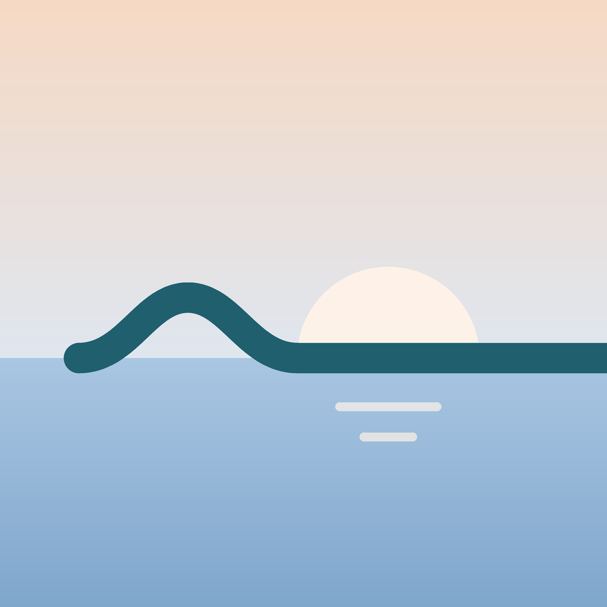

Live status, gates and delays. Plus how bumpy it'll be.
Delay and gate alerts, and your forecast moves with the new time.

JFK→LAX now leaves at 11:15 PM. Still a few bumps, mostly calm, with light chop about 40 min in.
A few bumps, mostly calm. Tap to see when the bumps are.
Type a flight number, or pick from the day's nonstops.
When it gets bumpy, how strong, and when it ends.
From 48 hours out to confirmed, and after every delay.
A countdown to each bumpy stretch, even in airplane mode.
A turbulence forecast for your exact flight.
See when it starts, how strong it is and when it ends.
Turbulence along your route by altitude, with live pilot reports.
Plain words about each stretch. No scary charts.
48 hours out, then updates until it's confirmed on the day.
On your Lock Screen and Dynamic Island, even in airplane mode.
Rate the ride after you land. We publish our accuracy.